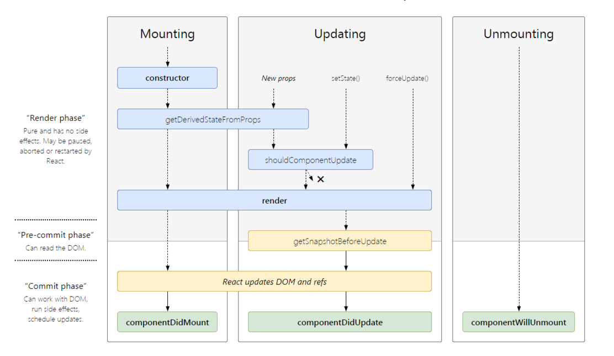

Record some React questions.
How does React work?
React creates a virtual DOM. When state changes in a component it firstly runs a diff algorithm, which identifies what has changed in the virtual DOM. The second step is reconciliation, where it updates the DOM with the results of diff.
create a virtual DOM
1 | // element.js |
1 | // index.js |
diff algorithm
1 | // diff.js |
patch
1 | import { Element, render, setAttr } from './element'; |
regression
1 | // index.js |
State and Props
State
State of a component is an object that holds some information that may change over the lifetime of the component.
1 | class User extends React.Component { |
Props
Props are inputs to a React component. They are single values or objects containing a set of values that are passed to React Components. i.e, They are data passed down from a parent component to a child component.
The primary purpose of props in React is to provide following component functionality:
- Pass custom data to your React component.
- Trigger state changes.
- Use via this.props.reactProp inside component’s render() method.
Both props and state are plain JavaScript objects. While both of them hold information that influences the output of render, they are different in their functionality with respect to component. i.e,
- Props get passed to the component similar to function parameters
- state is managed within the component similar to variables declared within a function.
The state is a data structure that starts with a default value when a Component mounts. It may be mutated across time, mostly as a result of user events.
Props are a Component’s configuration. They are received from above and immutable as far as the Component receiving them is concerned. A Component cannot change its props, but it is responsible for putting together the props of its child Components. Props do not have to just be data - callback functions may be passed in as props.
The major features of React
- It uses VirtualDOM instead RealDOM considering that RealDOM manipulations are expensive.
- Supports server-side rendering
- Follows Unidirectional data flow or data binding
- Uses reusable/composable UI components to develop the view
Advantages
- Increases the application’s performance with Virtual DOM
- It is easy to know how a component is rendered, you just need to look at the render function.
- JSX makes code is easy to read and write. It is also really easy to see the layout, or how components are plugged/combined with each other.
- It renders both on client and server side. This enables improves SEO and performance.
- Easy to integrate with other frameworks since it is only a view library
- Easy to write UI Test cases and integration with tools such as JEST.
Limitations
- React is just a view library, not a full-blown framework
- There is a learning curve for beginners who are new to web development.
- Integrating React.js into a traditional MVC framework requires some additional configuration.
- The code complexity increases with inline template and JSX.
- Too many smaller components leading to over-engineering or boilerplate
What happens during the lifecycle of a React component?
At the highest level, React components have lifecycle events that fall into three general categories:

Mounting
constructor()
If you don’t initialize state and you don’t bind methods, you don’t need to implement a constructor for your React component.1
2
3
4
5
6constructor(props) {
super(props);
// Don't call this.setState() here!
this.state = { counter: 0 };
this.handleClick = this.handleClick.bind(this);
}static getDerivedStateFromProps()
static getDerivedStateFromProps(props, state)is invoked right before calling the render method, both on the initial mount and on subsequent updates. It should return an object to update the state, or null to update nothing. This method exists for rare use cases where the state depends on changes in props over time. Note that this method is fired on every render, regardless of the cause.render()
The render() method is the only required method in a class component. The render() function should be pure, meaning that it does not modify component state, it returns the same result each time it’s invoked, and it does not directly interact with the browser. If you need to interact with the browser, perform your work in componentDidMount().componentDidMount()
componentDidMount() is invoked immediately after a component is mounted. Initialization that requires DOM nodes should go here. This method is a good place to set up any subscriptions. If you do that, don’t forget to unsubscribe in componentWillUnmount().
You may call setState() immediately in componentDidMount(). It will trigger an extra rendering, but it will happen before the browser updates the screen. This guarantees that even though the render() will be called twice in this case, the user won’t see the intermediate state. Use this pattern with caution because it often causes performance issues. In most cases, you should be able to assign the initial state in the constructor() instead.
Updating
static getDerivedStateFromProps()
shouldComponentUpdate()
shouldComponentUpdate(nextProps, nextState)is invoked before rendering when new props or state are being received. Use shouldComponentUpdate() to let React know if a component’s output is not affected by the current change in state or props. The default behavior is to re-render on every state change.render()
getSnapshotBeforeUpdate()
getSnapshotBeforeUpdate(prevProps, prevState)is invoked right before the most recently rendered output is committed to e.g. the DOM. It enables your component to capture some information from the DOM (e.g. scroll position) before it is potentially changed. Any value returned by this lifecycle will be passed as a parameter to componentDidUpdate().1
2
3
4
5
6
7
8
9
10
11
12
13
14
15
16
17
18
19
20
21
22
23
24
25
26
27
28
29
30
31
32class ScrollingList extends React.Component {
constructor(props) {
super(props);
this.listRef = React.createRef();
}
getSnapshotBeforeUpdate(prevProps, prevState) {
// Are we adding new items to the list?
// Capture the scroll position so we can adjust scroll later.
if (prevProps.list.length < this.props.list.length) {
const list = this.listRef.current;
return list.scrollHeight - list.scrollTop;
}
return null;
}
componentDidUpdate(prevProps, prevState, snapshot) {
// If we have a snapshot value, we've just added new items.
// Adjust scroll so these new items don't push the old ones out of view.
// (snapshot here is the value returned from getSnapshotBeforeUpdate)
if (snapshot !== null) {
const list = this.listRef.current;
list.scrollTop = list.scrollHeight - snapshot;
}
}
render() {
return (
<div ref={this.listRef}>{/* ...contents... */}</div>
);
}
}componentDidUpdate()
componentDidUpdate(prevProps, prevState, snapshot)is invoked immediately after updating occurs. This method is not called for the initial render.
Use this as an opportunity to operate on the DOM when the component has been updated. This is also a good place to do network requests as long as you compare the current props to previous props.1
2
3
4
5
6componentDidUpdate(prevProps) {
// Typical usage (don't forget to compare props):
if (this.props.userID !== prevProps.userID) {
this.fetchData(this.props.userID);
}
}
Unmounting
componentWillUnmount() is invoked immediately before a component is unmounted and destroyed. Perform any necessary cleanup in this method, such as invalidating timers, canceling network requests, or cleaning up any subscriptions that were created in componentDidMount().
These methods are considered legacy and you should avoid them in new code:
- UNSAFE_componentWillMount()
UNSAFE_componentWillMount() is invoked just before mounting occurs. It is called before render(), therefore calling setState() synchronously in this method will not trigger an extra rendering. Generally, we recommend using the constructor() instead for initializing state. - UNSAFE_componentWillUpdate()
UNSAFE_componentWillUpdate() is invoked just before rendering when new props or state are being received. Note that you cannot call this.setState() here; nor should you do anything else (e.g. dispatch a Redux action) that would trigger an update to a React component before UNSAFE_componentWillUpdate() returns. Typically, this method can be replaced by componentDidUpdate(). - UNSAFE_componentWillReceiveProps()
UNSAFE_componentWillReceiveProps() is invoked before a mounted component receives new props. If you need to update the state in response to prop changes, you may compare this.props and nextProps and perform state transitions using this.setState() in this method.
What is the purpose of using super constructor with props argument?
A child class constructor cannot make use of this reference until super() method has been called. The same applies for ES6 sub-classes as well. The main reason of passing props parameter to super() call is to access this.props in your child constructors.
Passing props:
1 | class MyComponent extends React.Component { |
Not passing props:
1 | class MyComponent extends React.Component { |
When to use a Class Component over a Functional Component?
Class components allows you to use additional features such as local state and lifecycle hooks. Also, to enable your component to have direct access to your store and thus holds state.
When your component just receives props and renders them to the page, this is a stateless component, for which a pure function can be used. These are also called dumb components or presentational components.
If the component need state or lifecycle methods then use class component otherwise use functional component.
Functional components:
This is the simplest way to create ReactJS components. It accepts props as an Object and returns ReactJS elements.1
2
3function Greeting(props) {
return <h1> Hello, {props.message}</h1>
}Class components:
You can also use Es6 class to define component.1
2
3
4
5class Greeting extends React.Component {
render() {
return <h1>Hello, {this.props.message}</h1>;
}
}
What are stateless components and stateful components?
If the behavior is independent of its state then it can be a stateless component. You can use either a function or a class for creating stateless components. But unless you need to use a lifecycle hook in your components, you should go for stateless functional components. There are a lot of benefits if you decide to use stateless functional components here; they are easy to write, understand, and test, and you can avoid the this keyword altogether.
If the behavior of a component is dependent on the state of the component then it can be termed as stateful component. These Stateful components are always class components and have a state that gets initialized in the constructor.
1 | class App extends Component { |
React Hook
Hooks are a new addition in React 16.8. They let you use state and other React features without writing a class.
State Hook
1 | import React, { useState } from 'react'; |
Effect Hook
The Effect Hook, useEffect, adds the ability to perform side effects from a function component. It serves the same purpose as componentDidMount, componentDidUpdate, and componentWillUnmount in React classes, but unified into a single API.
1 | import React, { useState, useEffect } from 'react'; |
Rules of Hooks
- Only Call Hooks at the Top Level
- Only Call Hooks from React Functions
What happens when you call “setState”?
The first thing React will do when setState is called is merge the object you passed into setState into the current state of the component. This will kick off a process called reconciliation. The end goal of reconciliation is to, in the most efficient way possible, update the UI based on this new state.
To do this, React will construct a new tree of React elements. Once it has this tree, in order to figure out how the UI should change in response to the new state, React will diff this new tree against the previous element tree.
By doing this, React will then know the exact changes which occurred, and by knowing exactly what changes occurred, will able to minimize its footprint on the UI by only making updates where absolutely necessary.
reconciliation
When a component’s props or state change, React decides whether an actual DOM update is necessary by comparing the newly returned element with the previously rendered one. When they are not equal, React will update the DOM. This process is called reconciliation.
callback function as an argument of setState
The callback function is invoked when setState finished and the component gets rendered. Since setState is asynchronous the callback function is used for any post action.
Note: It is recommended to use lifecycle method rather this callback function.
1 | setState( |
What is the difference between a Presentational component and a Container component?
Presentational components are concerned with how things look. They generally receive data and callbacks exclusively via props. These components rarely have their own state, but when they do it generally concerns UI state, as opposed to data state.
Container components are more concerned with how things work. These components provide the data and behavior to presentational or other container components. They call actions and provide these as callbacks to the presentational components. They are also often stateful as they serve as data sources.
Keys
Keys help React identify which items have changed, are added, or are removed. Keys should be given to the elements inside the array to give the elements a stable identity. The best way to pick a key is to use a string that uniquely identifies a list item among its siblings.
1 | render () { |
Most often you would use IDs from your data as keys. When you don’t have stable IDs for rendered items, you may use the item index as a key as a last resort. It is not recommend to use indexes for keys if the items can reorder, as that would be slow.
Refs
The ref is used to return a reference to the element. They should be avoided in most cases, however, they can be useful when we need direct access to DOM element or an instance of a component.
There are 3 type of ref.
1 | // string ref |
1 | // callback ref |
1 | // React.createRef |